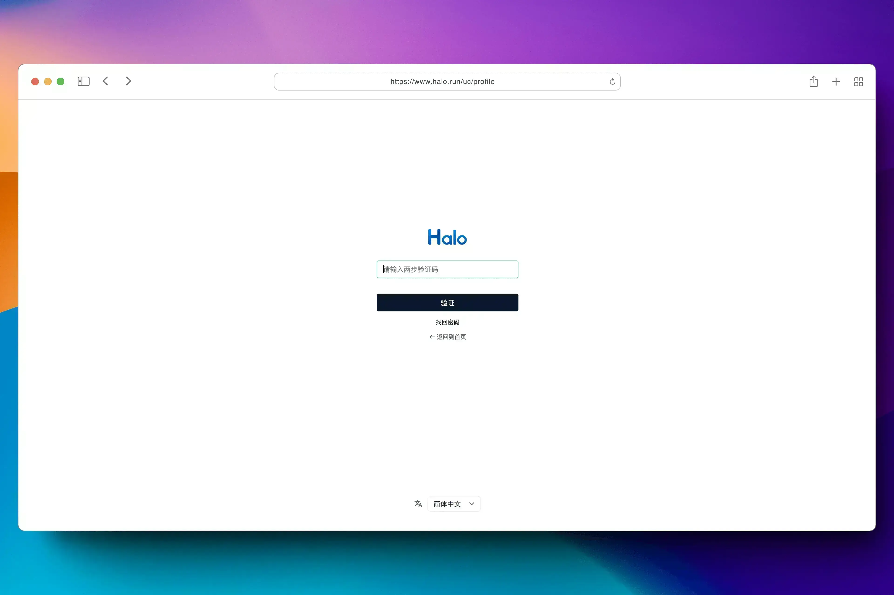

Halo 是一款强大易用的开源建站工具，它让你无需太多的技术知识就可以快速搭建一个博客、网站或者内容管理系统。具备可插拔架构、主题套用、富文本编辑器等多重特性，支持用户根据自己的喜好选择不同类型的插件及主题模板来定制化自己的站点功能及外观。让内容创作和发布更加便捷生动。
截至目前（2023 年 Q4 季度），Halo 已经在 Docker Hub 获得了超过 200 万次下载，GitHub Star 数突破 30 k，并拥有一百多名社区贡献者。
2024 年 02 月 01 日，强大易用的开源建站工具 Halo 正式发布 2.12.0 版本。
在这个版本中，Halo 主要支持了 2FA 认证和模型索引机制，以及其他 40 多项功能优化和问题修复。
亮点更新
支持索引机制，优化查询效率和内存占用
从 Halo 2.0 开始，我们提供了一种新的模型定义方式，开发者可以非常方便的定义数据模型并进行数据操作。但此机制在数据量达到一定程度时，可能会造成一定的性能问题，反馈到最终使用体验就是数据查询速度慢以及消耗更多的服务器资源。
所以在这个版本中为了解决此问题，我们引入了索引机制。有了此机制之后，在服务内部查询数据或者过滤数据的时候就不再需要扫描全表，可以带来更高的查询效率和更低的资源消耗。
支持 2FA 认证
在 2.12 中，我们为系统用户添加了两步验证的功能，并内置了 TOTP 的验证方式。有了这个功能之后，可以更好的保障用户的账户安全。
配置 TOTP 验证器：
登录之后跳转到两步验证的页面：

编辑器更新
在 2.12 版本中，我们继续为编辑器进行了大量优化和功能更新，
搜索与替换
现在，你可以在编辑器中使用快捷键（Ctrl / Command + F）调出搜索框，可以根据关键词进行文本搜索，同时支持大小写、正则等验证。此外，也支持关键词替换和批量替换。
图片插入
在这个版本中，我们重构了图片的内容块，现在支持插入图片之后选择图片的来源并上传，也可以从附件库选择。与此同时，优化了粘贴和拖拽图片上传的功能，现在可以及时查看到图片的上传进度，也支持取消上传。
上传图片支持显示上传进度，不再是等待上传完成才显示图片：

支持替换图片：
重新发行 Jar 包
从 Halo 2.0 开始，我们推荐使用 Docker 进行部署，并且未提供原生的 Jar 包部署方式，目的是为了提供更加简单快捷和统一的部署方式，这可以一定程度上抹平配置环境带来的差异。但后续收到不少关于仍然需要 Jar 运行方式的反馈，所以从此版本开始重新发行 Jar 包，并提供相关的部署文档。
完整更新日志
新特性
支持发布构建产物 halo-x.y.z.jar。 by @JohnNiang in #5170
支持 2FA 认证方式。 by @JohnNiang & @ruibaby in #4737
功能优化
为默认富文本编辑器 table 组件渲染后的 html 增加 colgroup 元素与 width 属性。 by @LIlGG in #5176
修复 Halo 还未处于准备就绪时访问页面或接口出现“Scheme not found”错误的问题。 by @JohnNiang in #5032
优化文章数据的调协过程以降低 Halo 启动时文章的调协耗时同时提高性能和资源利用率。 by @guqing in #5250
问题修复
修复默认编辑器中图片无法等比例拖动放大缩小的问题。 by @pillar-cat in #4993
修复同一个自定义模型构建出的 Scheme 不相等导致无法正确从 SchemeManager 中移除的问题。 by @guqing in #5245
修复当浏览器标签页不活跃时，文章编辑页面的 health 接口没有定时请求的问题。 by @ruibaby in #5266
修复摘要中包含特殊字符导致无法解析页面的问题。 by @JohnNiang in #5263
依赖更新
升级 SpringDoc 至 2.3.0。 by @JohnNiang in #4987
升级依赖 Spring Boot 至 3.2.2。 by @JohnNiang in #5232
升级依赖 Lucene 至 9.9.1。 by @JohnNiang in #5261
升级依赖 Resilience4j 至 2.2.0。 by @JohnNiang in #5262
开发者相关
修复开发环境运行 Console 报错的问题。 by @pillar-cat in #4983